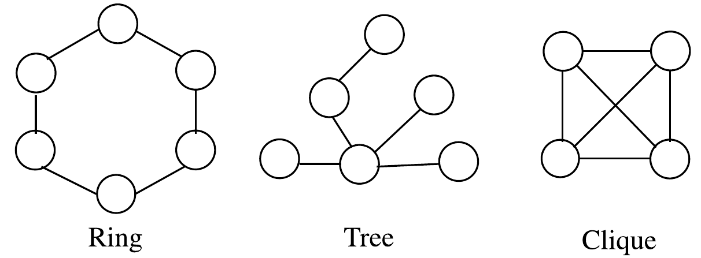
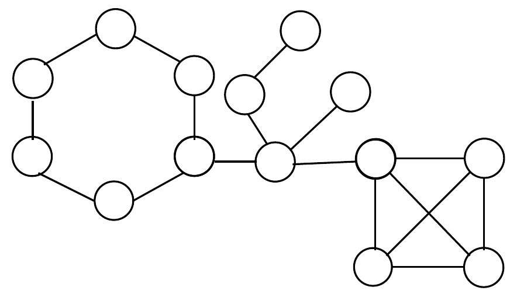
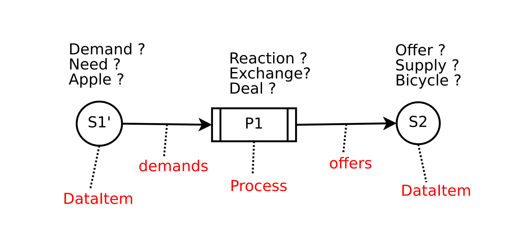
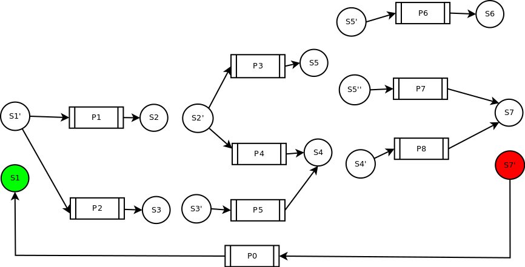
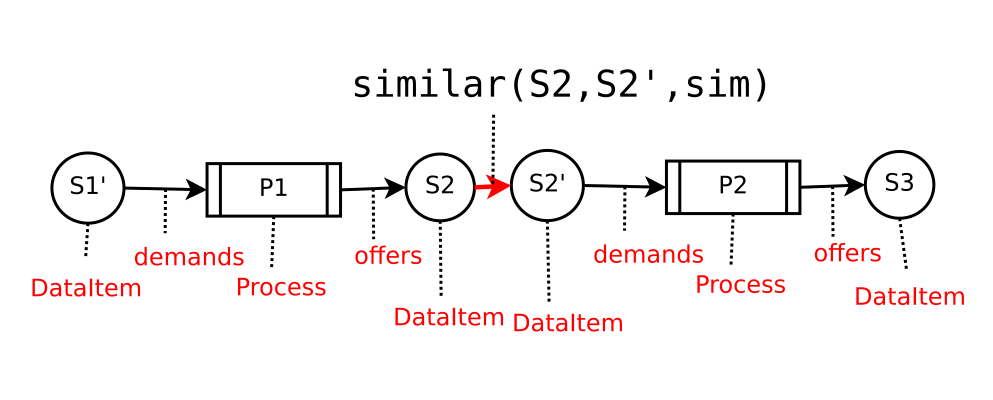
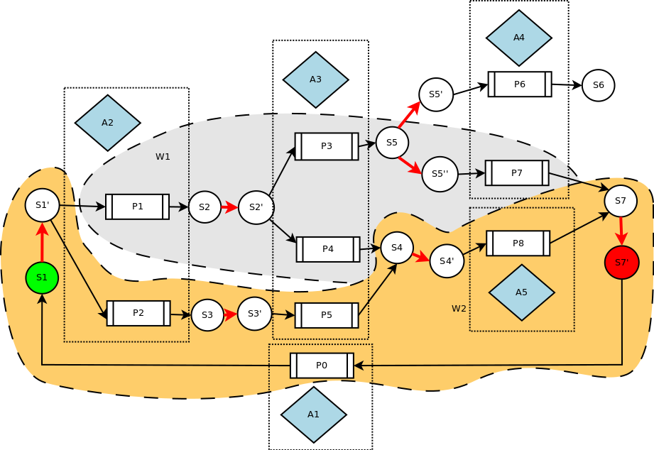
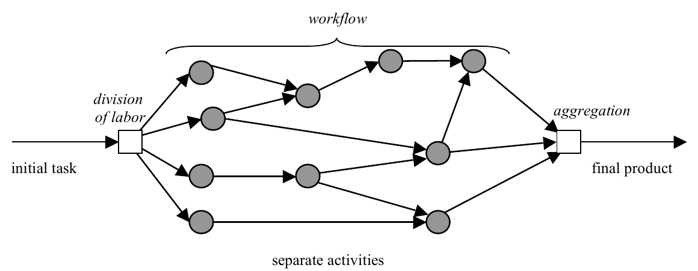
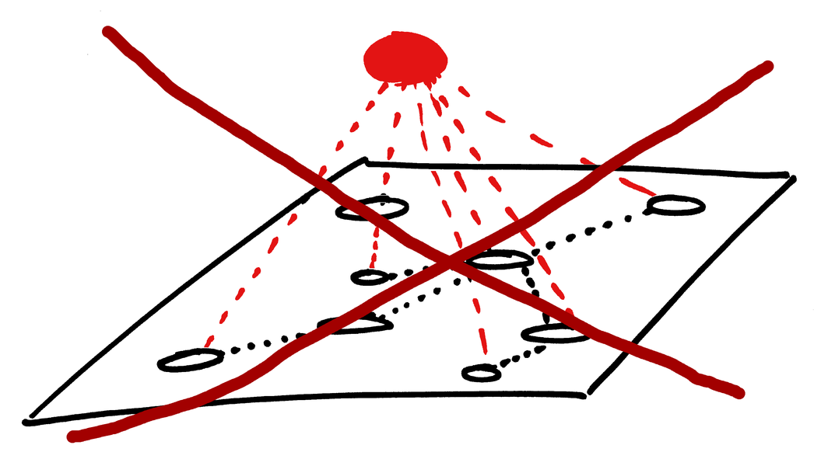
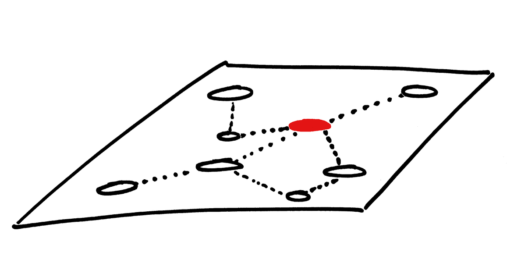

is made up of a collection of processes \(V\) (computing units);
operating in a common communication medium by sending and receiving messages/information through communication channels \(E\);
in terms of structural view it can be represented as a connected graph/network \(N = \left\{ {V,E} \right\}\)
Three graph types / structures of particular interest


Finding these structures in a larger graph often provides a solution to a problem
Autonomy of individual processes
Every process in a distributed system is completely autonomous sub-system except for messages sent and received;
When solving a problem, a process is characterized by:
input parameters (program);
knowledge of the environment (neighbour processes);
information in the internal memory;
information in sent and received messages;
Every process has its own computation capacities
Distributed algorithms
A distributed algorithm is a collection of \(n\) automata, each of which is a Turing machine plus the capability of sending and receiving messages to other processes;
Two types of coordination:
The execution of a distributed synchronous algorithm is governed by the global clock -- the order/causality is the same for all processes;
In asynchronous system there is no notion of external/global time, therefore each process may see different order of events;
(Distributed) offer network
pairs

Bag of \(\{\textit{offer},\textit{demand}\}\) pairs

Connecting processes via similar \(\textit{dataItems}\)

... \(P1\) (owned by Bob) offers \(S2\) (green apple) which is similar (sim measure 95%) to \(S2'\) (red apple) which is demanded by \(P2\) (owned by Alice)...
Finding chains of processes

Reminds of work-flow ?

"Solving" an offer network
Centralized approach (global)

Decentralized approach (local)

Perspective of a node: each node knows only its neighbours.
Cycles found in the graph will have to be executed, i.e. goods physically exchanged;
Precise locations / "ownerships" of \(\{\textit{offer},\textit{demand}\}\) pairs will be needed;
Agents may need to confirm transactions and change soft constraints:
E.g. would you like to take a pear instead of an apple?
Trade-off between knowledge and connectivity
Due to accelerating change, the environment of each agent in a network (offer network, Internet, society, organization, team, etc.) is in constant flux;
Knowledge of the environment, needed for action, is getting obsolete fast;
It makes more sense to learn how to perform an action every time it is needed rather than keeping memories / experience of previous ones (E.g. navigation with Google maps);
Continuous participatory sense-making
Sense-making is an essential aspect of cognition:
a continuous effort to form a network of connections and representations of objects as they are perceived in the world;
" [..] is a motivated, continuous effort to understand connections (which can be among people, places, and events) in order to anticipate their trajectories and act effectively in relation to them."
In participatory sense-making most of the representations of environment come from connections rather than are generated internally from personal experience;
Forgetting past experiences and models of behaviour and fast 'on-the-fly' learning becomes increasingly important;
Global Brain is/can be a fluid collective memory for participatory sense-making.
Centralization of a system decreases its fluidity;
Decentralized architectures / systems / processing are needed for fluid society;
Centralized architectures are becoming too costly;
References
Raynal, M. (2013). Distributed Algorithms for Message-Passing Systems. Springer Science & Business Media.
Cushing, R. S. (2015). Data-centric computing on distributed resources.
Cushing, Reginald et al. (2015). “Towards a data processing plane: An automata-based distributed dynamic data processing modelâ€. In: Future Generation Computer Systems.
Heylighen, Francis (2013). “Self-organization in Communicating Groups: The Emergence of Coordination, Shared References and Collective Intelligenceâ€. en. In: Complexity Perspectives on Language, Communication and Society. Ed. by Àngels Massip-Bonet and Albert Bastardas-Boada. Understanding Complex Systems. Springer Berlin Heidelberg, pp. 117–149.
Heylighen, Francis et al. (2015). Chemical Organization Theory as a modeling framework for self-organization, autopoiesis and resilience. GBI Working Paper v1, p. 29.
Rocha, Rodrigo Caetano and Bhalchandra Digambar Thatte (2015).“Distributed cycle detection in large-scale sparse graphsâ€. In: XLVII SBPO 2015 - Simpósio Brasileiro de Pesquisa Operacional.
De Jaegher, H., & Di Paolo, E. (2007). Participatory sense-making. Phenomenology and the Cognitive Sciences, 6(4), 485–507.